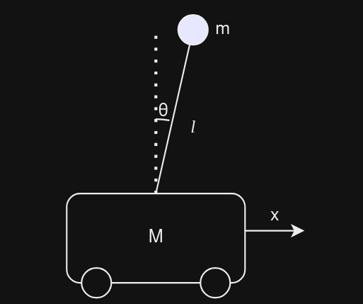
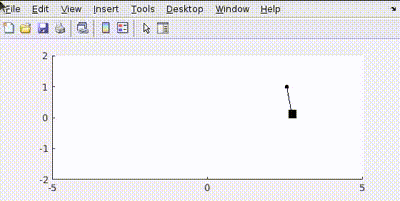

For a pendulum it’s state variables are defined by it’s angle \(\theta\) and \(\dot{\theta}\) ,Q=[100 0; 0 100] says that we have given equal penalty to both error in position and velocity(Here in terms of \(\theta\)).
In simulation is obtained as

Our aim is to design a two-wheeled balancer, and program a self-balancing robot that uses LQR control to maintain its upright position. The project integrates concepts from linear algebra, state space equations, Lagrangian mechanics, and control theory, along with 3D modeling, MATLAB simulations, and stepper motor control with ESP-IDF.
Instead of focusing on forces and Newton’s laws, Lagrangian mechanics
uses the Lagrangian function, \({L}\),
which is the difference between the kinetic energy \(T\) and potential energy \(V\) of a system:
\[\qquad \qquad L=T-V \]
The Lagrangian approach is better because we don’t need to know the
forces but just the constraints and we can straightforwardly use any
type of coordinates we want as long as they describe the system.
Equations of motion are obtained by using
\[\qquad \qquad \frac{d}{dt}\left(\frac{\partial
L}{\partial \dot{q}_i}\right)-\frac{\partial L}{\partial q_i} =0
\]
Control means to regulate or direct. Thus, a control system is the
interconnection of various physical elements connected in a way to
regulate or direct itself or the other system. ### State Space System A
system to be controlled is described as
\[\qquad \qquad\dot{x}=Ax+Bu\]
Where \(x=\) state variables, \(\dot{x}=\) rate of change of state
variables, \(u\) is the input by
actuator, matrix \(A\) describes how
the state variables interact and \(B\)
describes how inputs \(u\) affect the
state.
\[\qquad \qquad y=Cx+Du\]
\(y\) is the output vector, \(C\) is a matrix that maps the state
variables to the outputs, and \(D\)
describes how the inputs directly affect the outputs.
This
representation allows us to model and analyze the system.
Now we know how to represent a system to be controlled. LQR stands
for Linear Quadratic Control, as the name suggests it tries to minimize
the quadratic cost function of a linear system. Here,
\[\qquad \qquad J=\displaystyle \int_{0}^{ \infty }
(x^TQx+u^TRu) dt\]
is our cost function. Where, \(Q\) positive matrix that penalizes state
error, and \(R\) penalizes control
effort.
Optimal control effort is obtained by using \[u=-Kx\] For that \(K\) is the gain matrix given by \(R^{-1}B^TP\) and \(P\) is solution of Algebraic Riccati
equation
\[\qquad \qquad
A^TP+PA-PBR^{-1}B^TP+Q=0\]
Uff, enough maths let’s get
to implementaion.
Let’s try to model an inverse pendulum on a cart using LQR control

Using Lagrangian the equations obtained is ->
\[\qquad \qquad
L=\frac{1}{2}\dot{x}^2(M+m)+\frac{1}{2}m(
l^2\dot{\theta}^2+2l\dot{x}\dot{\theta}cos(\theta) ) \]
Note that these equations are Non-Linear, to linearize them we must
consider an equilibrium point(be it a stable or unstable). Supposing
that point to be when \(x=0\) and \(\theta=0\).
By applying Euler Lagrange
equation,
\[\qquad \qquad
\displaylines{ (M+m)\ddot{x}+ml\ddot{\theta}=u \\ l\ddot{\theta} +
\ddot{x}-g\theta=0}\]
As a proud engineer, we should
consider approximations such as \(cos\theta\) ->\(1\) and \(sin\theta\) ->\(\theta\).
Now we can model this system
in MATLAB. For that \(A\) matrix in
state space equation is our jacobian matrix w.r.t state variables and
\(B\) matrix is jacobian matrix w.r.t
actuator variables.
Hence, the cart tries to adjust itself such that it achieves the final position of x=-2 with balancing the pendulum.
Putting all this in MATLAB and simulating gives us such controlled output

The pendulum achieves a rest state at given position. ### Relation of
\(Q\) and \(R\) As we saw earlier LQR tries to minimize
the cost function consisting of \(Q\)
and \(R\) matrices. #### \(Q\) penalizes state error what does that
mean? Let’s take a base case of a simple pendulum with Q matrix defined
as Q=[100 0; 0 100] and R as 0.001 and we have to achieve an end point
of \(-\pi/2\) from rest.
For a
pendulum it’s state variables are defined by it’s angle \(\theta\) and \(\dot{\theta}\) ,Q=[100 0; 0 100] says that
we have given equal penalty to both error in position and velocity(Here
in terms of \(\theta\)).
In
simulation is obtained as
#### Now let’s penalize error in position more Q=[100 0; 0 1]
This happens because the control tries to minimize the error in position faster than velocity
#### Let’s penalize actuator effort R=1
See how the actuator aims to use least amount of effort to
conserve energy.
In practical robotics, balancing actuator effort and energy is crucial to ensure efficiency and performance. Efficient control conserves energy, which is essential for battery-powered robots and helps extend their operational time. Such control also helps us setting the limits of a system.
We created a 3D model of our balancer using Onshape. For control we plan to use NEMA17 stepper motors for precision control along wiht A2988 motor driver. Using ESP32-WROOM we plan to launch our model to control it.

This CAD-Model is to be simulated in MATLAB.